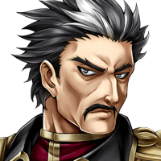
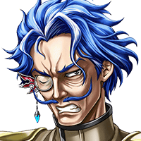

クッ……コイツ、何なの？ いきなり襲ってきて……。
分からないが…… これほどまでの力……まさか……！？
？？？
フフフッ…… こんなところに封神竜がいるとは……。
セリア
そんなことは、どうでもいいわ！ なんでアンタこんなところに！？
ベルツ
フフッ……。 俺の目的、薄々は分かってるでしょう？
ベルツ
正直、この世界の奥地まで足を運ぶことも 覚悟していたのですが、
ベルツ
どうやら俺が持つ封神鎧の力と共鳴し、 ここまで来てくれたようですね……。
ベルツ
しかも、Shou-chanと戦って、 ダメージを負っている……。
ベルツ
やあ、ルジーナ、レダ。 ２人ともタイミングがいいな。
ベルツ
いや、お前たちからしたら、 少しばかり遅かった、というところかな？
ベルツ
アルザ・マスタの力……真の召喚の力……。 これさえ手に入れば……
ベルツ
エルガイアは、どのような存在にも 脅かされることはなくなる……。
俺が追ってきていることなど、 織り込み済みであったであろうが……。
ラナス
目的のものを目の前にして、 さしもの貴様も油断したようだな……。


ラナス
奪われたもの……返してもらうぞ！
ティリス
ウッ……。 封神竜……力が回復している……！！
ラナス
俺に向かってくるというのか……。 ならば都合がいい……。
ルジーナ
状況は最悪だが、ラナスの野郎に 封神竜を倒させるわけにはいかねえ。
セリア
そんな……封神竜が暴れる中、 アイツらを叩くなんて……！！
サートゥルス
ああ……。 このまま、封神竜を再び寝所に戻すぞ。
サートゥルス
あそこは、この世界で一番大神皇様の力が、 色濃く残っている場所。
サートゥルス
我々が油断さえしなければ、 悌神皇の力を抑えられるはずだ。
サートゥルス
あの程度でやられる者たちではあるまい。
サートゥルス
我々は当初の予定通り、 寝所で彼らを待つとしよう。
セリア
封神竜や二神がいたところからは、 随分吹き飛ばされたみたいだけど……。
レダ
どうやら、 別の場所に吹き飛ばされたようね……。
カル
傷が深いな……。 すぐに処置を施さないと……！
セリア
ルジーナ！ アンタ、さすがに今そんな事を……！！
ベルツ
…………。 相変わらず容赦ないな、ルジーナ……。
ルジーナ
アベル機関の長官から、 封神鎧の力を掠め取るなんて、
ルジーナ
テメーらしくない強引さだったじゃねーか。
ベルツ
故郷が……焼かれる夢を見て…… 目を覚ますのは……もうゴメンだからな。
ティリス
こればっかりは安静にして 時間かけて回復させるしかないよ……。
ルジーナ
チッ……俺はこのバカを連れて、 一旦エルガイアに戻る……。
レダ
え……！？ ベルツの手当は必要かもしれないけど……。
レダ
今、私たちが２人ともエルガイアに戻っても 意味がないんじゃない？
レダ
私だけでも、Shou-chanたちに 協力した方が……。
ルジーナ
………俺に考えがある。いいから来やがれ！
ルジーナ
テメーに、アベル機関、 そして封神竜のことを任せてやる。
ルジーナ
テメーも、 そこそこ使えるようになってきたんだ。
ルジーナ
テメーに俺様の代わりは務まるはずもねーが それでもしっかりやることだな！！
レダ
……この状況でも、あの調子とはね。 相変わらずよね、アイツも。
レダ
でも、Shou-chan、 あなたに期待しているのも確か……
レダ
アイツはアイツで、 何かするつもりなんだろうけど、
セリア
ルジーナ…… 結局最後は相変わらずだったわね。
セリア
レダも付き合わされて、 ご苦労なことだわ……。
セリア
ま、アイツが素直に頼み事して 来たりなんかしたら、
カル
ハハッ……ベルツさんが一命を 取り留めたってことで、
カル
アイツもいつもの調子を 取り戻したということなんだろうさ。
ティリス
やっぱり封神竜と戦った影響なのかな……？
カル
だろうな……。 それ以外考えられないからな。

ギャレット
クッ……！！
ラナス
あのこそ泥から“器”は取り戻した。 後は、それに注ぐ力を手に入れるだけ……。
ラナス
あの力さえ手に入れたのなら、俺はようやく あいつらを超えることができる……。


{kind=link}
{kind=link}
{kind=link}
{kind=link}
{kind=link}
{kind=link}
{kind=link}
{kind=link}
{kind=link}
{kind=link}
{kind=link}
{kind=link}